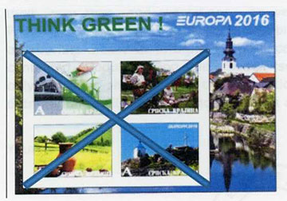
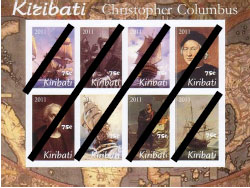
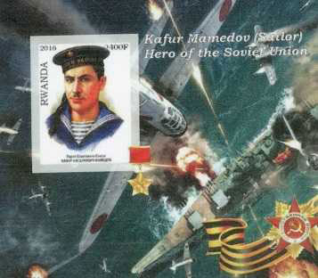

The WNS & UPU Circulars in 2017
← Illegal Stamps — article index
THE STATE OF THE WADP NUMBERING SYSTEM (WNS)
AND OF THE UPU PHILATELIC CIRCULARS IN 2017
Victor MANTA, PWO
The state of the WNS in 2017
From the WNS website we learn as follows:
„The WNS website is therefore a reference tool and a control, by omission, of stamps that have been issued illegally and labels that are claimed to be stamps. The WNS is one of the tools the UPU has introduced, helping the Posts and the philatelic market as a whole to combat this problem.”
Please notice the wording “by omission ”, which means that any stamp that is not listed in the WNS database is not a legitimate one. This presumes that all legitimate stamps are included in this database. A beautiful dream that turned into a never ending nightmare…
As of the date of writing, the WMS completeness is far from being achieved, even if the works on it started on January 1st , 2002. I mention some reasons for this unfortunate situation:
• The major postal administrations (PA) of Germany and The Netherlands declined from the very beginning to participate in the WMS. This didn't change since.
• We learned in 2014, from the UPU page of Participating Agencies that the PA of Aland Islands (2012), Belgium (2012) and Finland (2013) stopped the registration of their stamps.
• Other countries didn't send stamps for registration for a long time. Just some examples: P.R. of China (2014), India (2014), Liechtenstein (2012), Montenegro (2009), Mozambique (2006), Nigeria (2010), Poland (2013), Singapore (2008), Solomon Island (2014), Togo (2007).

Illegals from CroatiaThis doesn't mean, of course, that these countries don't issue legitimate postal stamps. We discovered in the near past even some incredible aberrations. For example, the small Solomon Island issued only in 2015, through its official agent Stamperija, 800 different stamps and 200 miniature sheets (MS). This material is listed in the Scott catalogue but not on the WNS.
A country that is not listed at all on the WMS nevertheless legally issued only in 2015, through the same agent, over 800 different stamps and over 200 MS. For more information on both mentioned stamp issues please visit this page .
Even if it is a very expensive endeavor, that costs the participating PA millions of Swiss Francs (for the registration of each stamp the PA must pay to the UPU the amount of CHF 50.00), the mentioned large holes in the WNS database make it obviously improper for the identification of illegal stamps. The marketing activities for the usage of WNS, that were invented later, look like pretexts found to justify its exorbitant costs.
The state of the UPU Philatelic Circulars (2017)
In 1996, the IB of the UPU begun publishing on its site the so-called UPU Philatelic Circulars, mainly to fight against the illegal issues. This site contains the denouncement made since 2003 by the PA of different countries to the UPU about illegal stamps issued in their name but without their approval.
By using this tool many illegal stamps could be identified in time, for example by the Worldwide Philatelic Observatory at the New York World Stamp Show 2016.

Illegals from KiribatiSuddenly in 2016 the Circulars from 2015 - 2016 weren't accessible anymore without a password. For this reason, the PWO complained by email in October 2016 to Mr. Louse Virgile, the then manager of the UPU philatelic activities. Here is his answer of 10/18/2016 (free translation from French):
"As far as the circulars about illegal products are concerned, I can confirm that they are unfortunately no longer accessible to everyone, so we will soon change the system and publish these circulars on the WNS, with a reminder on the UPU website. The issue is being studied and should be completed quickly. "
Because we noticed that in April 2017 three new Circulars become available on the WNS site but all old Circulars on the UPU site couldn't be accessed anymore without a password, what made them unusable for the worldwide collectors, we asked by email Mr. Vigile to inform again the PWO about the future accessibility to these Circulars.
Thanks to an automatic response we learned that Mr. Vigile retired and that we should contact his assistant, what we immediately did. The answer (in French, free translation) came after just two days (thanks!):
“Indeed, the system has been adapted and your request is relevant.
I will look at the matter and see how far I can make the philatelic circulars 2003-2016 available on the WNS website.”
Stéphane Cuennet, Assistant Programme Philately and IRC, WADP Secretariat.Let us summarize. In the six passed month the problem wasn't really studied and solved, as assured us the now retired Mr. Virgile. According to Mr. Cuenned, he will start reflecting now how to solve an unfortunate situation that his own team created . Knowing for years the UPU philatelic team inertia, the whole doesn't look promising at all.
Meanwhile for over six months the stamp collectors worldwide, the philatelic jurors, etc., cannot access the only tool that allows identification of illegal stamp issues. Isn't this a shame that it takes so long, for documents that already exist on the UPU website, to either (temporarily) remove their protection or quickly copy/paste them to the WNS site?
UPDATE Nov. 2017: The UPU Circulars 2003 - 2017 are still NOT accessible on the UPU website.
UPDATE Jan. 2018. Links to Circulars published between 2010 - 2017 were published on the FIP site of Fight Against Fakes and Forgeries by Richard Gratton (Secretary & treasurer). Good job, Richard!

Illegal from RwandaThe stamps featured on this page were extracted from the three Circulars published on the WNS site in 2017. These Circulars cover, as usually, only a small part of the illegal stamps issued year after year, by never identified perpetrators.
Everybody complains but nobody does something to identify them and to bring them before the courts. This should be possible thanks to the Memorandum of Understanding and Collaboration between Interpol and the UPU, signed by both organizations on April 29, 1997, which means 20 years ago. But, as usually, the UPU will push the responsibility toward the Postal Administrations, and vice-versa. The losers in this game are the stamps collectors and their wonderful hobby!
About the author . Victor Manta is the founder and the current president of the PWO. He is mostly interested in thematic (topical) stamps and in the philately on the Internet. His philatelic sites were multiple awarded in web sites philatelic competitions. He is also a well-known philatelic journalist, who published numerous philatelic articles on the web and in printed magazines.
|